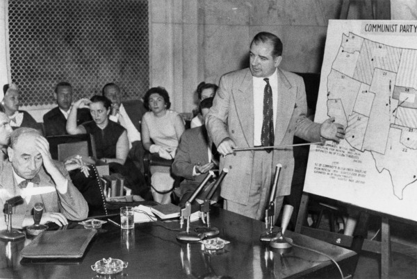

Directions: Read the background, study the photograph, then answer the questions.
Background. The photograph below shows Joseph N. Welch, the lawyer representing the United States Army, seated beside Senator Joseph McCarthy on June 9, 1954, the thirtieth day of the Army-McCarthy hearings. The Senate panel was hearing charges the Army and McCarthy had traded against each other, and television cameras carried the proceedings to millions of viewers. Minutes before this exchange, McCarthy had named Fred Fisher, a young lawyer in Welch's Boston firm, for past membership in the National Lawyers Guild. Welch answered in the words quoted in Question 2. Source: United States Senate photograph of the hearings, June 9, 1954, via Wikimedia Commons.

1. Source the photograph. Who are the two men, which one represented the Army, and what was being heard on the day the photograph was taken?
2. Welch told McCarthy: Let us not assassinate this lad further, Senator. You've done enough. Have you no sense of decency, sir? At long last, have you left no sense of decency? Who is the lad, and what had McCarthy just done to him in the hearing room?
3. Place this day inside the wider scare. Name two parts of the machinery of fear that were already running before McCarthy spoke at Wheeling in 1950, and state the year each began.
4. The exchange helped turn the country against McCarthy, and the Senate voted 67 to 22 to condemn his conduct that December. State one thing the exchange and the vote settled, and one question about the scare they left unsettled.
1. Source the photograph. Joseph N. Welch, at left, was the lawyer representing the United States Army. Senator Joseph McCarthy sits beside him. The Senate Permanent Subcommittee on Investigations was hearing the charges the Army and McCarthy had traded against each other, the Army accusing McCarthy's office of seeking special favors for a former aide and McCarthy accusing the Army of sheltering Communists. The photograph dates to June 9, 1954, during hearings that ran 36 days on television. (Blueprint 6)
2. Who is the lad, and what had McCarthy done? The lad is Fred Fisher, a young lawyer in Welch's firm who had once belonged to the National Lawyers Guild and had already been withdrawn from the Army's legal team. McCarthy named him in open session, before a national television audience, tying him by association to a group the Attorney General had described in hostile terms. Welch's point is that the naming itself was the injury, done to a man who was not a witness and could not answer in the room. (Blueprint 6)
3. Place this day inside the wider scare. Any two of the following, with years. The federal loyalty program began by Executive Order 9835 in 1947, with investigations of federal workers and loyalty oaths. The House Un-American Activities Committee held its Hollywood hearings in 1947, and the Hollywood Ten were cited for contempt of Congress that year. The studio blacklist began in November 1947. Alger Hiss was convicted of perjury in January 1950, weeks before the Wheeling speech. The point is that McCarthy joined machinery already running and did not build it. (Blueprint 5)
4. What the exchange and the vote settled, and what they left open. Settled: McCarthy's conduct was condemned by his own institution, by a vote of 67 to 22 in December 1954, and his power as the center of the scare collapsed. The televised exchange settled the public judgment of his method, accusation by association against a man not present to answer. Left open: which of the era's charges involved real espionage, how the loyalty program and the blacklist should be judged case by case, and where lawful investigation should have stopped. The censure judged conduct. It did not retry the scare. (Blueprint 5 and Blueprint 6)
Teacher note. This check is formative. Question 3 is the machinery diagnostic. A student who treats McCarthy as the whole scare has the personality without the lesson, and should redo sections B and C of the guided notes before the writing task.